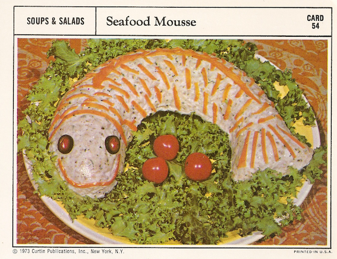

Seafood Mousse

Have you been looking for grandma's old seafood mousse recipe?
Well, you're in luck...
Ingredients
- 1 envelope unflavored gelatin
- 1/4 cup cold water
- 1/2 cup boiling water
- 1/2 cup mayonnaise
- 1 tablespoon lime juice
- 1 tablespoon grated onion
- 1 teaspoon salt
- 1/4 teaspoon pepper
- 2 cups fish (halibut, salmon or tuna), drained and finely chopped
- 1 tablespoon capers, chopped
- 2 tablespoons chopped parsley
- 1/8 teaspoon dried tarragon
- 1/8 teaspoon dried crushed marjoram
- 1 cup heavy cream, whipped
- Carrot strips and sliced olives (optional)
Steps
- Soften gelatin in cold water
- Add boiling water and stir until it dissolves
- Let cool
- Add mayonnaise, lime juice, onion, salt and pepper, mix well and chill until mixture begins to set
- Fold in fish, capers, parsley, tarragon, marjoram and whipped cream.
- Pour into an oiled fish mold and chill until firm.
- Unmold on serving platter and if desired garnish with carrot strips and stuffed olive slices